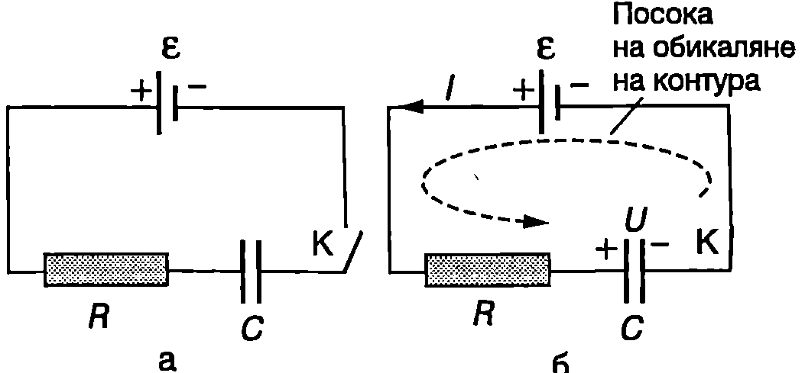
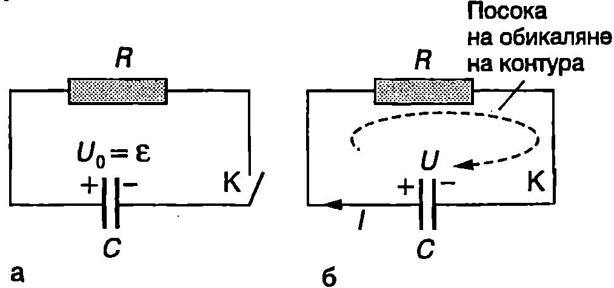

Квазистационарни токове
Досега разглеждахме електрически вериги, в които текат постоянни токове. При постоянните токове електричното поле в проводниците не се изменя с течение на времето. Да допуснем, че в даден момент в точка $A$ от електрическа верига електричното поле и токът се изменят скокообразно. Тези изменения се разпространяват много бързо (със скоростта на светлината $c$) и след време $\tau$ достигат всички точки от веригата. За верига с дължина $l = 1$ m $$\tau = \frac{l}{c} = \frac{1~\mathrm{m}}{3.10~\mathrm{m/s}} \approx 3.10^{-9}~\mathrm{s}.$$
В действителност изменението на токовете не става мигновено, а за някакъв интервал от време $T$. Когато е в сила неравенството $T\gg\tau$, токовете се наричат квазистационарни. Квазистационарните токове се изменят много бавно в сравнение със скоростта, с която тези изменения се предават по електрическата верига (например периодът на изменение на тока в електрическата мрежа в домовете ни е $T = 2.10^{- 2}~\mathrm{s}$). Затова в даден момент от времето квазистационарният ток има практически една и съща стойност във всички точки по дължината на един проводник, наречена моментна стойност на тока. Това дава възможност законите при постоянните токове (закон на Ом, правила на Кирхоф и др.) да се прилагат за моментните стойности на квазистационарните токове.
Като пример за квазистационарни токове ще разгледаме процесите на зареждане и разреждане на кондензатор.
Зареждане на кондензатор

`Фиг. 61.1`
Кондензаторът с капацитет $C$ от електрическата верига, показана на Фиг. \ref{fig:61.1}а, не в зареден. В момента $t = 0$ ключът $K$ се затваря и във веригата протича ток, кой то зарежда кондензатора (Фиг. \ref{fig:61.1}б). Ще обърнем внимание, че в пространството между електродите на кондензатора не преминават електрични заряди. Прехвърлянето на заряди от единия електрод на другия електрод, т.е. зареждането на кондензатора, става през съединителните проводници, резистора със съпротивление $R$ и източника с ЕДН $\mathcal E$ (вътрешното съпротивление на източника не се отчита). Да означим с $I$ моментната стойност на тока, а с $U$- моментната стойност на напрежението на кондензатора. Прилагаме правило то на Кирхоф за токовия контур (Фиг. \ref{fig:61.1}б): $$RI+U=\mathcal E. $$ Забележка. Когато контурът съдържа кондензатор, напрежението на кондензатора се взема със знак плюс, ако при обикалянето на контура се преминава от положителния към отрицателния електрод на кондензатора. Казано по друг начин, при прилагането на правилото на Кирхоф падовете на напреженията върху резисторите и напреженията на кондензаторите от един токов контур се приемат за положителни, ако потенциалът намалява в посоката на обикаляне на контура, т.е. когато се преминава от точка с по-голям потенциал към точка с по-малък потенциал напрежението между двете точки е положително. Напрежението $U$ и зарядът $q$ на кондензатора са свързани с познатото от електростатиката съотношение $q = CU$. От друга страна, $\displaystyle I = \frac{dq}{dt}$ Заместваме $\displaystyle I = \frac{dq}{dt} = C \frac{dU}{dt}$ в уравнение \eqref{eq:61.1} и получаваме $$RC\frac{dU}{dt} + U = \mathcal E. $$ Въвеждаме нова променлива $u = U-\mathcal E$ и записваме уравнение \eqref{eq:61.2} във вида $$RC\frac{du}{dt} + u = 0. $$ Разделяме променливите $$\frac{du}{u} = -\frac{dt}{RC} $$ и интегрираме: $$u = A\exp\left(-\frac{t}{RC}\right) $$ Константата $A$ определяме от началното условие: в момента $t = 0$ напрежението на кондензатора е $U = 0$ и $u = -\mathcal E$ След заместване в уравнение \eqref{eq:61.5} се получава $A = -\mathcal E$ Връщаме се към първоначалната променлива И и за напрежението на кондензатора окончателно получаваме $$U = \mathcal E \left(1 - \exp\left(-\frac{t}{RC}\right)\right) $$ Заместваме и от уравнение \eqref{eq:61.6} в \eqref{eq:61.1} и определяме зависимостта от времето на тока, зареждащ кондензатора: $$I = \frac{\mathcal E - U}{R} = \frac{\mathcal E}{R} \exp\left(-\frac{t}{RC}\right) $$ Графиките на функциите $U(t)$ и $I(t)$ са показани на Фиг. \ref{fig:61.2}. Напрежението на кондензатора нараства от $U = 0$ в момента $t = 0$ до $U = \mathcal E$ при $t \to \infty$. Токът има максимална стойност $I = I_0 = \mathcal E/R$ началния момент t = 0 след намалява до нула по експоненциален закон.
Получените резултати показват, че зареждането на кондензатора не става мигновено, а се извършва с крайна скорост, която се определя от произведението $$\tau = RC. $$ Това произведение има размерност на време и се нарича времеконстанта на веригата. За време $\tau$ токът се изменя от $I = I_0$ до $I = I_0 \exp(-1) = I_0/e = 0 ,368I_0$ , т.е, токът намалява $e = 2,!71$ пъти. За същото време напрежението на кондензатора нараства от $U = 0$ до $U = \mathcal E(1 - \exp(- 1)) = \mathcal E(1 - 1/e) = 0,!6328\mathcal E$, т.е. достига 63,2% от максималната си стойност $\mathcal E$.

`Фиг. 61.2`
Разреждане на кондензатор Да разгледаме електрическа верига, съставена от кондензатор с капацитет $C$ и резистор със съпротивление $R$ ($RC$-верига). Кондензаторът е зареден предварително от източник с ЕДН $\mathcal E$ до напрежение $U_0 =\mathcal E$ Ключът К е отворен (Фиг. \ref{fig:61.3}а). В $t = 0$ ключът се затваря и кондензаторът започва да се разрежда през резистора. Да означим с $I$ и $U$ моментните стойности съответно на тока във веригата и на напрежението на кондензатора в произволен момент г. Прилагаме правилото на Кирхоф за токовия контур (Фиг. \ref{fig:61.3}б): $$RI-U=0 $$ Ще обърнем внимание, че при обикалянето на контура преминаваме от отрицателния към положителния електрод на кондензатора, поради което напрежението на кондензатора И се взема със знак минус. В случая $$I = -\frac{dq}{dt} = -C \frac{dU}{dt}.$$ Знакът минус показва, че зарядът на кондензатора намалява: $dq < 0$, а $I = -dq/dt > 0$. Заместваме тока $I$ в уравнение \eqref{eq:61.9}, разделяме променливите, интегрираме и получаваме $$U = A_1\exp\left(-\frac{t}{RC}\right) $$ Константата $A_1$ определяме от началното условие: в момента $t = 0$ напрежението на кондензатора е $U = \mathcal{E}$ Получаваме $A_1 = \mathcal E$ $$U = \mathcal E\exp\left(-\frac{t}{RC}\right) $$ Заместваме $U$ от уравнение \eqref{eq:61.11} в \eqref{eq:61.9} и определяме зависимостта на тока от времето:

`Фиг. 61.3`
$$I = \frac{U}{R} =I_0\exp\left(-\frac{t}{RC}\right) $$ където $I_0 = \mathcal E/R$ е токът във веригата в началния момент $t = 0$ Следователно при разреждането на кондензатор с капацитет $C$ през резистор със съпротивление $R$ напрежението върху кондензатора и токът във веригата намаляват с течение на времето по експоненциален закон с времеконстанта $\tau = RC$.
Пример 61.1
Определете количеството топлина $Q$, което се отделя в резистора при зареждането на кондензатора от електрическата верига, показана на Фиг. \ref{fig:61.1}. \end{psexample}
Решение
Ще решим задачата по два начина.
-
Ще използваме закона за запазване на енергията. Когато кондензаторът е зареден, неговото напрежение е $\mathcal E$, а зарядът му е $q_0 = C \mathcal E$. Енергията на заредения кондензатор е $W = {C \mathcal E^2}/{2}$. При зареждането на кондензатора зарядът $q_0$ преминава през източника и електродвижещите сили извършват работа $A = q_0 \mathcal E = C \mathcal E^2$. От закона за запазване на енергията следва равенството $$A = W + Q \quad \text{или} \quad C \mathcal E^2 = \frac{C \mathcal E^2}{2} + Q,$$ откъдето определяме отделеното в резистора количество топлина: $$Q = \frac{1}{2} C \mathcal E^2.$$
-
Отделеното за време $dt$ количество топлина в резистора се определя от закона на Джаул-Ленц: $$dQ = R I^2 dt.$$ Заместваме моментната стойност на тока $I$ от уравнение \eqref{eq:61.7} и интегрираме: $$Q = \int_0^\infty R I^2 dt = R \int_0^\infty \left(\frac{\mathcal E}{R} e^{-\frac{t}{RC}}\right)^2 dt = \frac{\mathcal E^2}{R} \int_0^\infty e^{-\frac{2t}{RC}} dt = \frac{1}{2} C \mathcal E^2.$$ Задачи
-
Определете времето за зареждане на кондензатор с капацитет $C = 100~\mathrm{\mu F}$ през резистор със съпротивление $R = 100 \Omega$. Приемете, че процесът на зареждане практически е приключил след време $4\tau$, където $\tau$ е времеконстантата на веригата.
-
Кондензатор с капацитет $C$ се разрежда през резистор със съпротивление $R$. Изразете чрез времеконстантата $\tau = RC$ на веригата времето, след което:
а) напрежението на кондензатора достига половината от началната си стойност;
б) енергията на кондензатора намалява 2 пъти.
- Кондензаторът от електрическата верига, показана на Фиг. \ref{fig:61.1}, има капацитет $C = 20~\mathrm{\mu F}$, съпротивлението на резистора е $R = 2~\mathrm{k\Omega}$, ЕДН на източника е $E = 12~\mathrm{V}$. Определете:
а) времеконстантата $\tau$ на веригата;
б) колко секунди след затварянето на ключа $K$ напрежението на кондензатора ще достигне половината от максималната си стойност.
-
Кондензатор с капацитет $C$ се зарежда през резистор със съпротивление $R$. Изразете чрез времеконстантата $\tau = RC$ на веригата времето $t$, след което напрежението върху кондензатора ще достигне $90%$ от максималната си стойност.
-
Ще наречем ефективност на начина на зареждане на кондензатор отношението $\eta = W_C/W$, където $W$ е енергията, която се черпи от източника за времето на зареждане $t$, а $W_C$ е натрупаната за това време в кондензатора енергия. Ефективността $\eta$ зависи от начина на зареждане.
А. Кондензатор с капацитет $C$ се зарежда от източник с постоянно ЕДН $\mathcal{E}$. Съпротивлението на цялата верига е $R$ (в $R$ е включено и вътрешното съпротивление на източника).
а) При каква стойност на $\mathcal{E}$ кондензаторът ще се зареди до напрежение $U$ ($U < \mathcal{E}$) за време $t$?
б) Определете ефективността $\eta$ на зареждането.
Б. Кондензаторът се зарежда при постоянен ток до същото напрежение $U$, за същото време $t$.
а) Определете големината на тока $I$ и зависимостта $\mathcal{E}(t)$, по която трябва да се изменя ЕДН на източника.
б) Колко е ефективността $\eta$ при този начин на зареждане?
В. Изразете отношението $\displaystyle \mathcal E = \frac{\eta(\mathcal{E} = {\text{const})}}{\eta({I = \text{const}})}$ и коментирайте характерните случаи. Какви изводи могат да се направят за ефективността на двата начина на зареждане?
Ако разполагате с $N$ еднакви батерии с ЕДН $\mathcal{E}$, как ще постъпите, за да заредите кондензатор до напрежение $U_0 = N\mathcal{E}$ с минимални топлинни загуби?